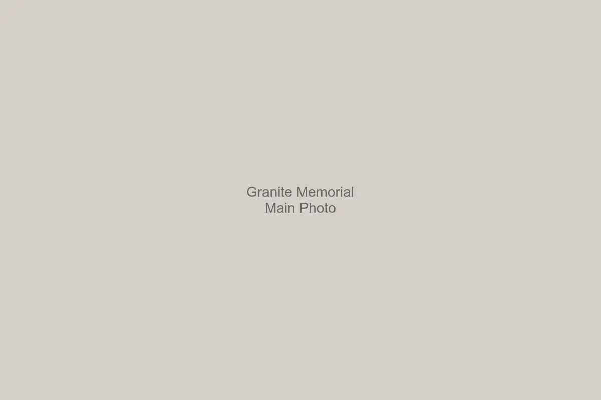
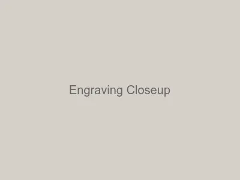
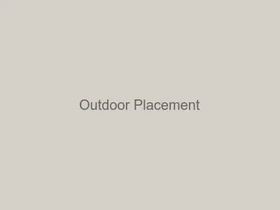

From $58
★★★★★ thousands of five-star reviews across our memorial collection. Read Reviews →
Deeply engraved into solid granite for outdoor clarity and lasting remembrance. Each stone is 3 cm (1.25") thick, naturally shaped, and crafted for permanent garden or lawn placement.
Part of our custom pet memorial stones collection.
Every granite pet memorial stone is deeply engraved — not surface etched. We use professional sandblasting to carve lettering and designs directly into the stone, creating depth that resists weather exposure and remains legible for decades.
Granite's natural hardness makes it one of the most durable materials for outdoor memorials. It resists freeze and thaw cycles, seasonal moisture, and long-term surface wear without cracking or fading. Each stone is 3 cm (1.25") thick, providing substantial weight and stability for garden placement.
Whether used as a dog memorial stone, cat memorial stone, or tribute to any beloved companion, the engraving process is the same — precise, permanent, and built to endure.
Each stone is 1.25" thick with hand-chiseled rustic edges. Because these are real stone — not manufactured tiles — every piece has subtle variations in tone and contour that make it unique.
$108
Our largest option. Accommodates full inscriptions with balanced spacing, or a minimalist layout with generous breathing room.
$82
The most versatile size. Fits a name, dates, and a short message with clear engraving depth and balanced line spacing.
$58
Best for a name and dates. Compact and purposeful — the most popular size for pet grave markers honoring dogs and cats.
$22
A small remembrance piece, often shaped from stone offcuts during larger memorial production. Fits a name and a single paw print — a quiet, personal tribute.
Not sure which size fits your wording? See our guide on choosing the right size pet memorial stone.
These engraved pet memorial stones are built for the real world — rain, sun, frost, and lawn maintenance. Granite's density and low porosity mean it naturally resists moisture absorption, preventing the cracking and flaking that affect softer materials over time.
The engraving itself is sealed within the stone's surface, not painted on top. This means lettering clarity is maintained through seasonal changes, freeze and thaw cycles, and years of outdoor exposure without refinishing.
Whether placed in a garden bed, along a fence line, or in an open lawn area, each memorial is designed to stay where you put it — stable, legible, and enduring.
Every memorial is made by hand in our workshop in Alma, Arkansas — not mass-produced or auto-generated from a template. When you share your pet's name, dates, and any message, we design the layout for balance, readability, and long-term engraving clarity.
The sandblasting process cuts lettering and designs directly into the granite surface. We control depth, spacing, and alignment to ensure each engraved pet memorial stone looks right and lasts right. You receive a layout proof before we begin engraving.
For wording inspiration, see our guide on what to write on a pet memorial stone.
Each memorial is engraved for outdoor placement and lasting clarity.